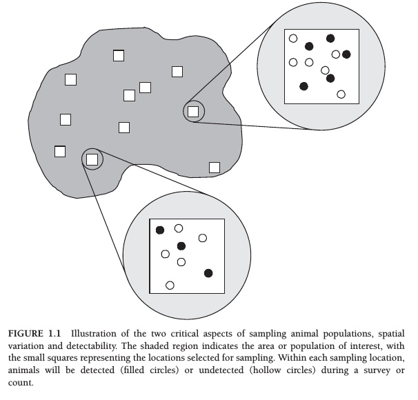
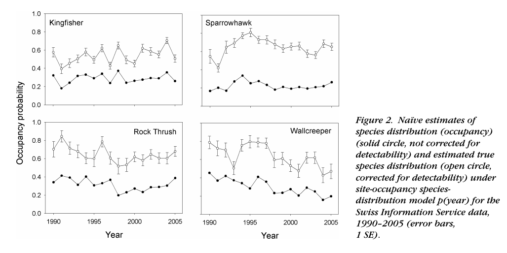
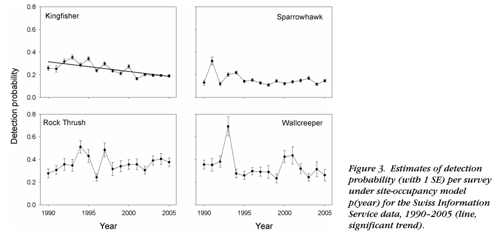
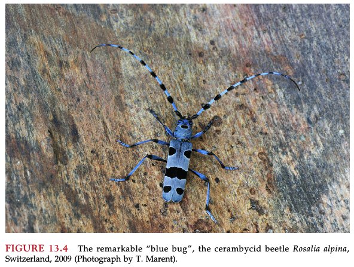

Workshop 12 - Occupancy modelling
Frédéric Barraquand
2021-04-15
Introduction
What is an occupancy model?
Assume a site occupancy probability \(\psi\) and a site detection probability \(p\). Introduced by MacKenzie et al. (2002)

From MacKenzie et al. (2017)
Camera traps
(when we can recognize species not individuals)
eDNA / metabarcoding
Like a camera trap where we would have species ID but not individual ID
Biased citizen science data
Correcting for changes in detection probability

From Kery et al. (2010)
Biased citizen science data
Correcting for changes in detection probability

From Kery et al. (2010)
Generated strong debates but now standard
Do we need to account for Pr(detection)? (Welsh et al. 2013, Guillera-Arroita et al. (2014))
See Dynamic ecology blog’s perhaps most commented post and Brian McGill’s further comments on Detection probabilities, statistical machismo, and estimator theory
Now standard tools, used whenever variation in Pr(detection) is expected or true occupancy/abundance is needed (Bailey et al. 2014, MacKenzie et al. (2017))
The basic occupancy model
What is an occupancy model?
Assume a site occupancy probability \(\psi\) and a site detection probability \(p\). We visit several sites and want to know both \(\psi\) and \(p\). Is that possible?
Basic model (1)
\(i\) site index in 1:I
\[ X_i|Z_i \sim \text{Bernoulli}(Z_i p) \]
\[ Z_i \sim \text{Bernoulli}(\psi) \]
Basic model (2)
One can prove this is equivalent to
\[ X_i \sim \text{Bernoulli}(p \psi) \]
(btw: true with binomial not just Bernoulli variables)
Problem: \(p \psi\) is just one parameter.
Basic model (3)
\(i\) site index in 1:I
\(t\) visit in 1:T
\[ X_{it}|Z_i \sim \text{Bernoulli}(Z_i p) \]
\[ Z_i \sim \text{Bernoulli}(\psi) \]
Robust design (similar to Pollock’s design in capture-recapture models). Identifiable now.
Basic model (4)
Define \(Y_i = \sum_{t=1}^{T} X_{it}\).
\[ Y_{i}|Z_i \sim \text{Binomial}(T,Z_i p) \]
\[ Z_i \sim \text{Bernoulli}(\psi) \]
Implementing this into code
JAGS/BUGS stuff
Super easy because we can use discrete latent variables
model {
# Priors
p~dunif(0,1)
psi~dunif(0,1)
# Likelihood
for(i in 1:nsite){
mu[i]<- p*z[i]
z[i]~dbern(psi)
y[i]~dbin(mu[i],T)
}
x<-sum(z[])
}Simulating the occupancy model
set.seed(42)
# Code by Bob Carpenter after Kéry & Schaub's BPA book.
I <- 250;
T <- 10;
p <- 0.4;
psi <- 0.3;
z <- rbinom(I,1,psi); # latent occupancy state
y <- matrix(NA,I,T); # observed state
for (i in 1:I){ y[i,] <- rbinom(T,1,z[i] * p);}Stan version
Marginalizing the latent discrete state \(Z\). Tutorials:
Code
Basic occupancy code
data {
int<lower=0> I;
int<lower=0> T;
int<lower=0,upper=1> y[I,T];
}
parameters {
real<lower=0,upper=1> psi1;
real<lower=0,upper=1> p;
}
model {
// local variables to avoid recomputing log(psi1) and log(1 - psi1)
real log_psi1;
real log1m_psi1;
log_psi1 = log(psi1);
log1m_psi1 = log1m(psi1);
// priors
psi1 ~ uniform(0,1);
p ~ uniform(0,1);
// likelihood
for (i in 1:I) {
if (sum(y[i]) > 0)
target += log_psi1 + bernoulli_lpmf(y[i] | p);
else
target += log_sum_exp(log_psi1 + bernoulli_lpmf(y[i] | p),
log1m_psi1);
}
}Analysing the occupancy model
data = list(I=I,T=T,y=y)
## Parameters monitored
params <- c("p", "psi1")
fit <- sampling(occupancy, data = data, iter = 1000, chains = 2, cores = 2)Analysing the occupancy model
print(fit, probs = c(0.10, 0.5, 0.9))## Inference for Stan model: d7cd568dae7053058194d5de14b2fd8a.
## 2 chains, each with iter=1000; warmup=500; thin=1;
## post-warmup draws per chain=500, total post-warmup draws=1000.
##
## mean se_mean sd 10% 50% 90% n_eff Rhat
## psi1 0.33 0.00 0.03 0.30 0.33 0.38 462 1
## p 0.36 0.00 0.02 0.34 0.36 0.38 872 1
## lp__ -698.65 0.05 0.98 -700.03 -698.37 -697.73 438 1
##
## Samples were drawn using NUTS(diag_e) at Thu Apr 15 09:12:28 2021.
## For each parameter, n_eff is a crude measure of effective sample size,
## and Rhat is the potential scale reduction factor on split chains (at
## convergence, Rhat=1).Real-life example
What are we studying?
Bluebug

The dataset
27 sites (woodpiles), 6 replicated counts for each.
Covariates:
forest_edge(edge or more interior),dateX,hX(date and hour of day)Detection at 10 of 27 woodpiles and from 1 to 5 times
- Questions:
- Have some bluebugs been likely missed in some sites?
- How many times should one visit a woodpile?
- Effect of forest edge?
Gathering the data
## BPA Kéry & Schaub, translation by Hiroki Itô & Bob Carpenter
## 13.4. Analysis of real data set: Single-season occupancy model
## Read data
## The data file "bluebug.txt" is available at
## http://www.vogelwarte.ch/de/projekte/publikationen/bpa/complete-code-and-data-files-of-the-book.html
data <- read.table("bluebug.txt", header = TRUE)
# Collect the data into suitable structures
y <- as.matrix(data[, 4:9])
y[y > 1] <- 1
edge <- data$forest_edge
dates <- as.matrix(data[, 10:15])
hours <- as.matrix(data[, 16:21])
# Standardize covariates
mean.date <- mean(dates, na.rm = TRUE)
sd.date <- sd(dates[!is.na(dates)])
DATES <- (dates-mean.date) / sd.date
DATES[is.na(DATES)] <- 0
mean.hour <- mean(hours, na.rm = TRUE)
sd.hour <- sd(hours[!is.na(hours)])
HOURS <- (hours-mean.hour) / sd.hour
HOURS[is.na(HOURS)] <- 0
last <- sapply(1:dim(y)[1],
function(i) max(grep(FALSE, is.na(y[i, ]))))
y[is.na(y)] <- 0
stan_data <- list(y = y, R = nrow(y), T = ncol(y), edge = edge,
DATES = DATES, HOURS = HOURS, last = last)Model specification
// BPA Kéry & Schaub, translation by Hiroki Itô & Bob Carpenter
// Single-season occupancy model
data {
int<lower=1> R;
int<lower=1> T;
int<lower=0,upper=1> y[R, T];
int<lower=0,upper=1> edge[R];
matrix[R, T] DATES;
matrix[R, T] HOURS;
int last[R];
}
transformed data {
int<lower=0,upper=T> sum_y[R];
int<lower=0,upper=R> occ_obs; // Number of observed occupied sites
matrix[R, T] DATES2;
matrix[R, T] HOURS2;
occ_obs = 0;
for (i in 1:R) {
sum_y[i] = sum(y[i]);
if (sum_y[i])
occ_obs = occ_obs + 1;
}
DATES2 = DATES .* DATES;
HOURS2 = HOURS .* HOURS;
}
parameters {
real alpha_psi;
real beta_psi;
real alpha_p;
real beta1_p;
real beta2_p;
real beta3_p;
real beta4_p;
}
transformed parameters {
vector[R] logit_psi; // Logit occupancy prob.
matrix[R, T] logit_p; // Logit detection prob.
for (i in 1:R)
logit_psi[i] = alpha_psi + beta_psi * edge[i];
logit_p = alpha_p
+ beta1_p * DATES + beta2_p * DATES2
+ beta3_p * HOURS + beta4_p * HOURS2;
}
model {
// Priors
alpha_psi ~ normal(0, 10);
beta_psi ~ normal(0, 10);
alpha_p ~ normal(0, 10);
beta1_p ~ normal(0, 10);
beta2_p ~ normal(0, 10);
beta3_p ~ normal(0, 10);
beta4_p ~ normal(0, 10);
// Likelihood
for (i in 1:R) {
if (sum_y[i]) { // Occupied and observed
target += bernoulli_logit_lpmf(1 | logit_psi[i])
+ bernoulli_logit_lpmf(y[i, 1:last[i]] | logit_p[i, 1:last[i]]);
} else { // Never observed
// Occupied and not observed
target += log_sum_exp(bernoulli_logit_lpmf(1 | logit_psi[i])
+ bernoulli_logit_lpmf(0 | logit_p[i, 1:last[i]]),
// Not occupied
bernoulli_logit_lpmf(0 | logit_psi[i]));
}
}
}
generated quantities {
real<lower=0,upper=1> mean_p = inv_logit(alpha_p);
int occ_fs; // Number of occupied sites
real psi_con[R]; // prob present | data
int z[R]; // occupancy indicator, 0/1
for (i in 1:R) {
if (sum_y[i] == 0) { // species not detected
real psi = inv_logit(logit_psi[i]);
vector[last[i]] q = inv_logit(-logit_p[i, 1:last[i]])'; // q = 1 - p
real qT = prod(q[]);
psi_con[i] = (psi * qT) / (psi * qT + (1 - psi));
z[i] = bernoulli_rng(psi_con[i]);
} else { // species detected at least once
psi_con[i] = 1;
z[i] = 1;
}
}
occ_fs = sum(z);
}
Model fitting
## Parameters monitored
params <- c("alpha_psi", "beta_psi", "mean_p", "occ_fs",
"alpha_p", "beta1_p", "beta2_p", "beta3_p", "beta4_p")
## MCMC settings
ni <- 6000
nt <- 5
nb <- 1000
nc <- 4
## Initial values
inits <- lapply(1:nc, function(i)
list(alpha_psi = runif(1, -3, 3),
alpha_p = runif(1, -3, 3)))
## Call Stan from R
out <- sampling(bluebug,
data = stan_data,
init = inits, pars = params,
chains = nc, iter = ni, warmup = nb, thin = nt,
seed = 1,
control = list(adapt_delta = 0.8),
open_progress = FALSE)Model results
print(out, digits = 2)## Inference for Stan model: 91261483fdb19348e2d9fabf8f9cba34.
## 4 chains, each with iter=6000; warmup=1000; thin=5;
## post-warmup draws per chain=1000, total post-warmup draws=4000.
##
## mean se_mean sd 2.5% 25% 50% 75% 97.5% n_eff Rhat
## alpha_psi 4.77 0.07 4.11 -0.02 1.64 3.58 6.97 15.12 3067 1
## beta_psi -5.56 0.07 4.14 -15.91 -7.79 -4.41 -2.52 -0.39 3078 1
## mean_p 0.57 0.00 0.15 0.27 0.47 0.58 0.69 0.85 3709 1
## occ_fs 16.91 0.04 2.41 12.00 16.00 17.00 18.00 21.00 3697 1
## alpha_p 0.33 0.01 0.70 -0.99 -0.13 0.32 0.78 1.74 3703 1
## beta1_p 0.33 0.01 0.40 -0.46 0.08 0.33 0.60 1.14 3871 1
## beta2_p 0.19 0.01 0.48 -0.75 -0.13 0.19 0.51 1.15 3706 1
## beta3_p -0.49 0.01 0.42 -1.38 -0.76 -0.47 -0.20 0.28 3906 1
## beta4_p -0.60 0.01 0.33 -1.28 -0.81 -0.59 -0.38 0.01 3916 1
## lp__ -41.24 0.03 2.05 -46.28 -42.33 -40.91 -39.73 -38.35 3700 1
##
## Samples were drawn using NUTS(diag_e) at Thu Apr 15 09:30:15 2021.
## For each parameter, n_eff is a crude measure of effective sample size,
## and Rhat is the potential scale reduction factor on split chains (at
## convergence, Rhat=1).## Posteriors of alpha_psi and beta_psi will be somewhat different
## from those in the book. This may be because convergences of these
## parameters in WinBUGS are not good, as described in the text.
## JAGS will produce more similar results to Stan.Overall occupancy
hist(extract(out, pars = "occ_fs")$occ_fs, nclass = 30, col = "gray")
Dynamic version
Dynamic occupancy model
a.k.a. “Multiple season version”. \(\psi\) changes between “seasons”.
How do we model this? Similar to metapop models: extinction and colonization probabilities.
Pr(colonization of site \(i\)) = \(\gamma_i\) (you can make this dependent on many things)
Pr(extinction in site \(i\)) = \(\epsilon_i\)
See MacKenzie et al. (2003), Kéry & Schaub (2011)
Mathematical formulation
\[ Z_{k+1}|Z_k \sim \text{Bernoulli}(\phi_k Z_k + (1-Z_k)\gamma_k) \]
where \(\phi_k = 1-\epsilon_k\).
You can have \(\gamma_k = f(\text{covariates}_k)\) for instance.
Notations from Kery and Schaub BPA book (Kéry & Schaub (2011)).
And even more applications…
Static and dynamic models with covariates
Multistate models
Spatial models (random spatial effects, spatial coordinates)
Multispecies models
Any combination of the above
References
Bailey, L.L., MacKenzie, D.I. & Nichols, J.D. (2014). Advances and applications of occupancy models. Methods in Ecology and Evolution, 5, 1269–1279.
Guillera-Arroita, G., Lahoz-Monfort, J.J., MacKenzie, D.I., Wintle, B.A. & McCarthy, M.A. (2014). Ignoring imperfect detection in biological surveys is dangerous: A response to ‘fitting and interpreting occupancy models’. PloS one, 9, e99571.
Kery, M., Royle, J.A., Schmid, H., Schaub, M., Volet, B., Haefliger, G. & Zbinden, N. (2010). Site-occupancy distribution modeling to correct population-trend estimates derived from opportunistic observations. Conservation Biology, 24, 1388–1397.
Kéry, M. & Schaub, M. (2011). Bayesian population analysis using winBUGS: A hierarchical perspective. Academic Press.
MacKenzie, D.I., Nichols, J.D., Hines, J.E., Knutson, M.G. & Franklin, A.B. (2003). Estimating site occupancy, colonization, and local extinction when a species is detected imperfectly. Ecology, 84, 2200–2207.
MacKenzie, D.I., Nichols, J.D., Lachman, G.B., Droege, S., Andrew Royle, J. & Langtimm, C.A. (2002). Estimating site occupancy rates when detection probabilities are less than one. Ecology, 83, 2248–2255.
MacKenzie, D.I., Nichols, J.D., Royle, J.A., Pollock, K.H., Bailey, L. & Hines, J.E. (2017). Occupancy estimation and modeling: Inferring patterns and dynamics of species occurrence. Elsevier.
Welsh, A.H., Lindenmayer, D.B. & Donnelly, C.F. (2013). Fitting and interpreting occupancy models. PLoS One, 8, e52015.